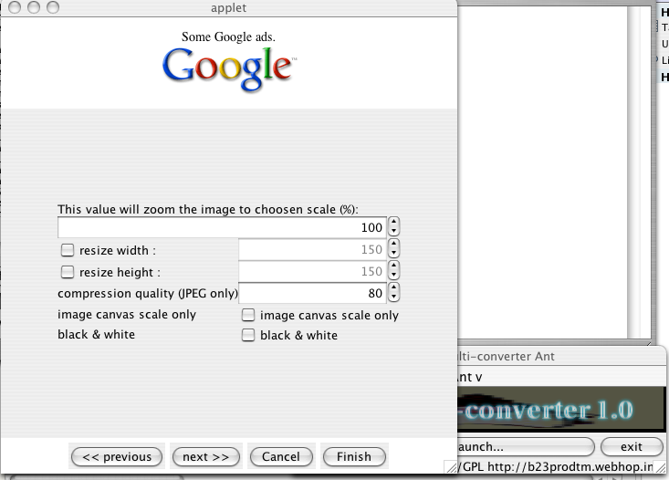

This package is part of the Swing interface in this API. You can use Steppable interface and InstructionsPane to begin one stepping-installation-like with the JSwing layout.
Here is an example of an installer stepper with 4 steps to finish:
| InstallerStepperExample.java |
1 import net.sf.jiga.xtended.ui.FileChooserPane; 2 import net.sf.jiga.xtended.ui.InstructionsPane; 3 import net.sf.jiga.xtended.ui.StatusPane; 4 import java.awt.BorderLayout; 5 import java.awt.Container; 6 import java.awt.event.ActionEvent; 7 import java.awt.event.ActionListener; 8 import java.util.HashMap; 9 import java.util.Iterator; 10 import javax.imageio.ImageIO; 11 import javax.swing.AbstractAction; 12 import javax.swing.Action; 13 import javax.swing.JApplet; 14 import javax.swing.JButton; 15 import javax.swing.JCheckBox; 16 import javax.swing.JLabel; 17 import javax.swing.JOptionPane; 18 import javax.swing.JSpinner; 19 import javax.swing.JTextArea; 20 import javax.swing.SpinnerNumberModel; 21 class InstallerStepper extends JApplet { 22 public void init() { 23 Container content = getContentPane(); 24 final InstructionsPane pane = new InstructionsPane(this, 0, 5); 25 toggleStep = new StatusPane(pane); 26 content.add(pane, BorderLayout.CENTER); 27 content.add(toggleStep, BorderLayout.SOUTH); 28 29 // add one new step in the panel store 30 int step = pane.addStep(); 31 32 // add one Text Area 33 pane.addStepComponent(step, new JTextArea("Go to next step and select the images files you want to convert.")); 34 35 // add another step in the panel store 36 step = pane.addStep(); 37 38 // here is the file chooser panel as an InstructionSet 39 final FileChooserPane jfc = new FileChooserPane(owner, ""); 40 jfc.setModeOpen(true); 41 42 // add the file chooser panel set to the InstructionsPane at the next available empty step 43 pane.addInstructionSet(jfc); 44 45 // here is how to add button with action 46 pane.addStepComponent(step, sw_selectFormat = new JButton("Conversion format...")); 47 48 // add one action listener to the button 49 // you can access the class- , static- and final- local variables 50 sw_selectFormat.addActionListener(new ActionListener() { public void actionPerformed(ActionEvent e) { 51 selectedConversion = JOptionPane.showInputDialog(InstallerStepper.this, 52 "What conversion type do you want?", "Convert...", 53 JOptionPane.QUESTION_MESSAGE, 54 null, 55 ImageIO.getWriterMIMETypes(), 56 getSelectedConversion()).toString(); 57 sw_convert.setText("Convert to " + getSelectedConversion()); 58 }}); 59 60 // add one more step with 2 columns of components for the layout 61 step = pane.addStep(2); 62 63 // each added component is given with row column span as arguments 64 pane.addStepComponent(step, new JLabel("This value will zoom the image to choosen scale (%):"), 1, 2); 65 pane.addStepComponent(step, sw_zoom = new JSpinner(new SpinnerNumberModel(100,1,500,1)), 1, 2); 66 67 // (É) 68 pane.addStepComponent(step, new JLabel("compression quality (JPEG only)")); 69 pane.addStepComponent(step, sw_compression_quality = new JSpinner(new SpinnerNumberModel((int)(compression_quality*100), 0, 100, 10))); 70 71 // there are accessible final variables 72 final HashMap<Integer, Action> color_options = new HashMap<Integer, Action>(); 73 final HashMap<Integer, Boolean> color_options_switch = new HashMap<Integer, Boolean>(); 74 sw_color_option = new HashMap<Integer, JCheckBox>(); 75 final int BLACKANDWHITE = 0; 76 final int CANVASSCALEONLY = 1; 77 78 // you can define final actions that will act with buttons or checkboxes 79 color_options.put(BLACKANDWHITE, new AbstractAction("black & white") { public void actionPerformed(ActionEvent e) { 80 blackAndWhiteEnabled = sw_color_option.get(BLACKANDWHITE).isSelected(); 81 }}); 82 color_options_switch.put(BLACKANDWHITE, blackAndWhiteEnabled); 83 84 //(É) 85 for(Iterator<Integer> i = color_options.keySet().iterator(); i.hasNext(); ) { 86 int aKey = i.next(); 87 sw_color_option.put(aKey, new JCheckBox(color_options.get(aKey))); 88 sw_color_option.get(aKey).setSelected(color_options_switch.get(aKey)); 89 pane.addStepComponent(step, new JLabel(color_options.get(aKey).getValue(Action.NAME).toString())); 90 pane.addStepComponent(step, sw_color_option.get(aKey)); 91 } 92 sw_zoom.setValue(100); 93 94 // (É) 95 96 // finally it is noticeable to validate the InstructionsPane before to use it, 97 pane.validate(); 98 } 99 } 100

@author www.b23prodtm.info